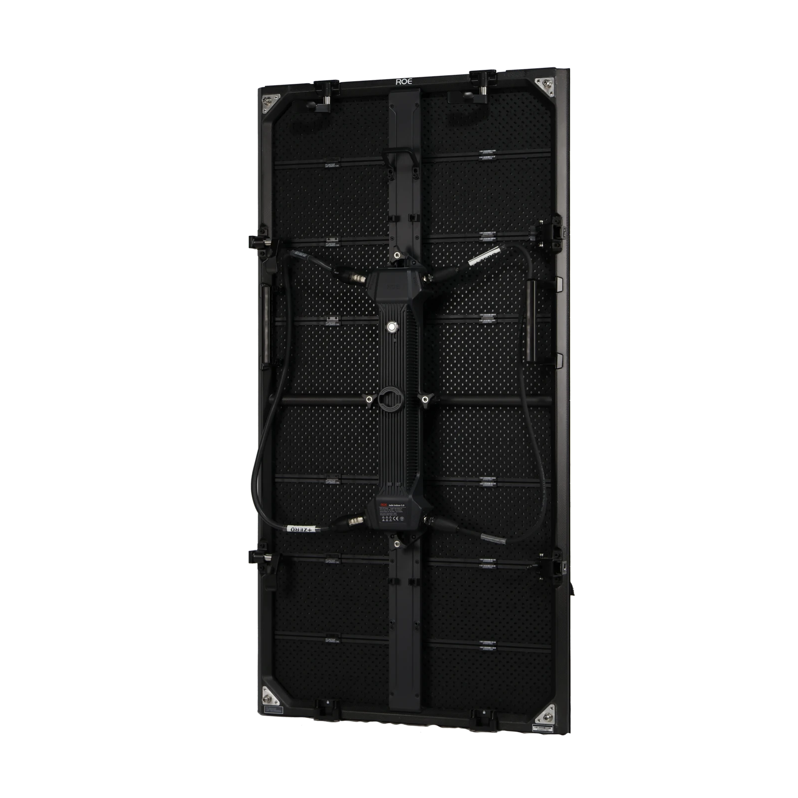
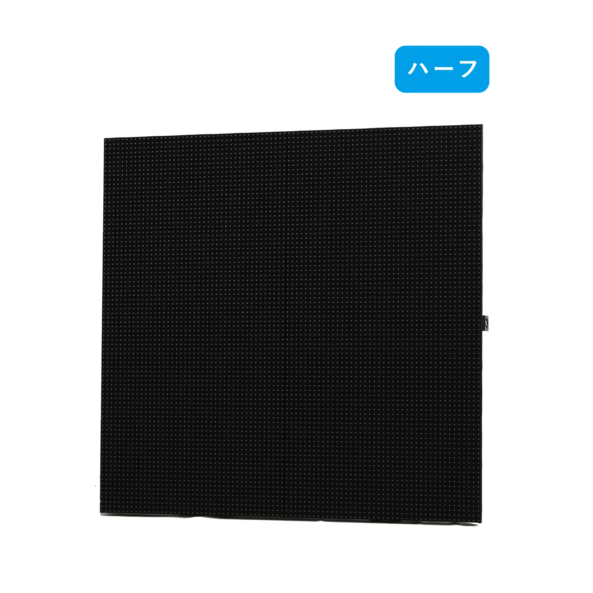
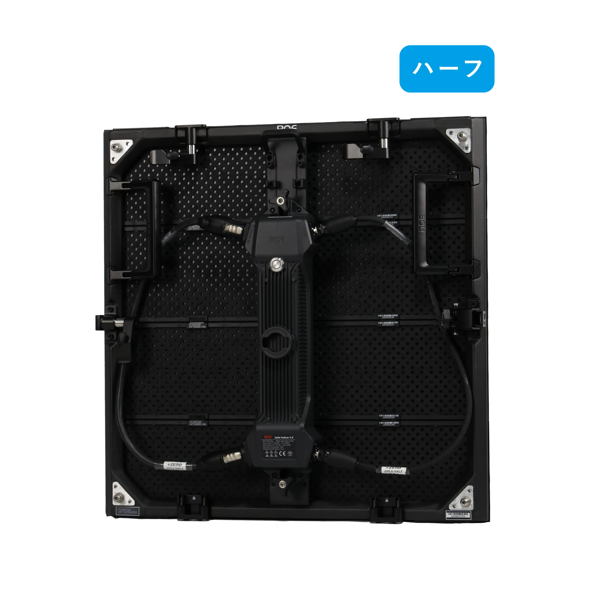
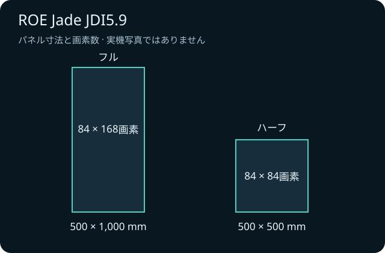

どの高さにする？
フルとハーフを使い分け、素材の見せ方と合わせる。
LED ↗EQUIPMENT / 70
屋内LEDパネル
高さや曲線を生かして、舞台の映像を組み立てる。
KEY SPECIFICATIONS
 画像を大きく見る ＋
画像を大きく見る ＋



01 / ROLE & FLOW
役割を表す説明図です。実際の配線・端子構成は案件に合わせて決めます。
02 / BEFORE YOUR BRIEF
フルとハーフを使い分け、素材の見せ方と合わせる。
客席の見え方と専用部材、設置担当者の範囲を整理する。
撮影カメラと本番素材を用意して表示試験を行う。
03 / CHOOSING THE RIGHT TOOL
屋内ステージや展示空間で、高さを調整した映像面や曲面構成を検討する用途に。客席の距離と素材に合わせて画面を設計します。
JDI5.9は屋内用です。JDO5.9など屋外向けの別型式とは分けて手配します。曲面は対応する部材と設計をそろえて行います。直角の角を作る場合は、専用コーナーパネルを使います。
フルとハーフは寸法と画素数が異なります。配置図には混在位置を記し、表示試験で上下左右と画素のつながりを点検します。カメラ撮影があるときは、本番用カメラで縞やちらつきを試してから運用します。
参考資料：製品取扱元の仕様案内 ↗（2026年11月5日照合）
日程、屋内外、画面の幅と高さ、枚数、使用する仕様、制御・支持部材、搬入出、設営・本番操作の担当範囲をお聞かせください。本体・周辺機材・搬入出・設営・本番操作・撤去を分けて、必要な範囲を整理します。セットの付属品や人員が自動で含まれる表示ではありません。
04 / RELATED EQUIPMENT